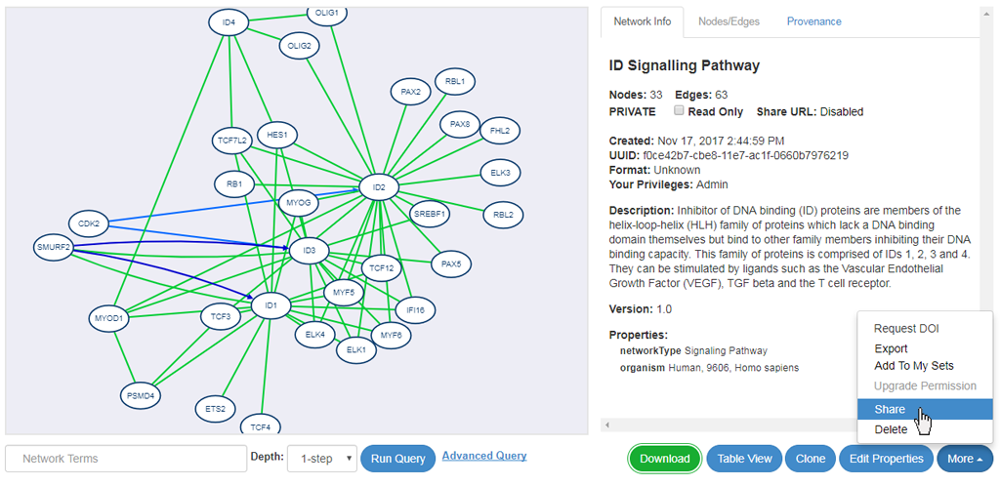
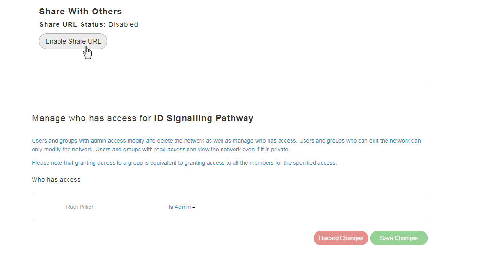
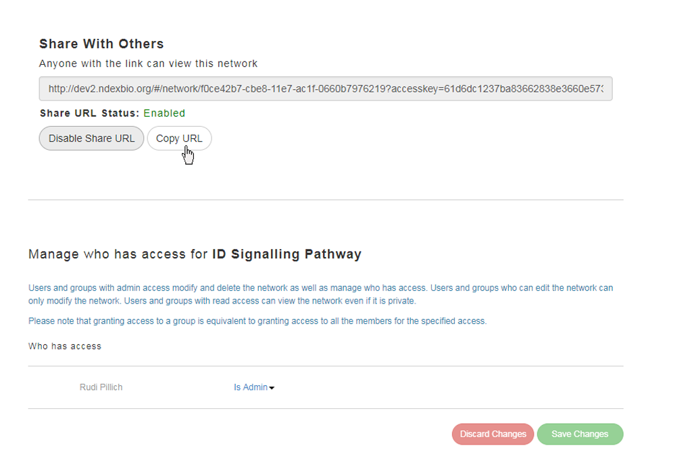
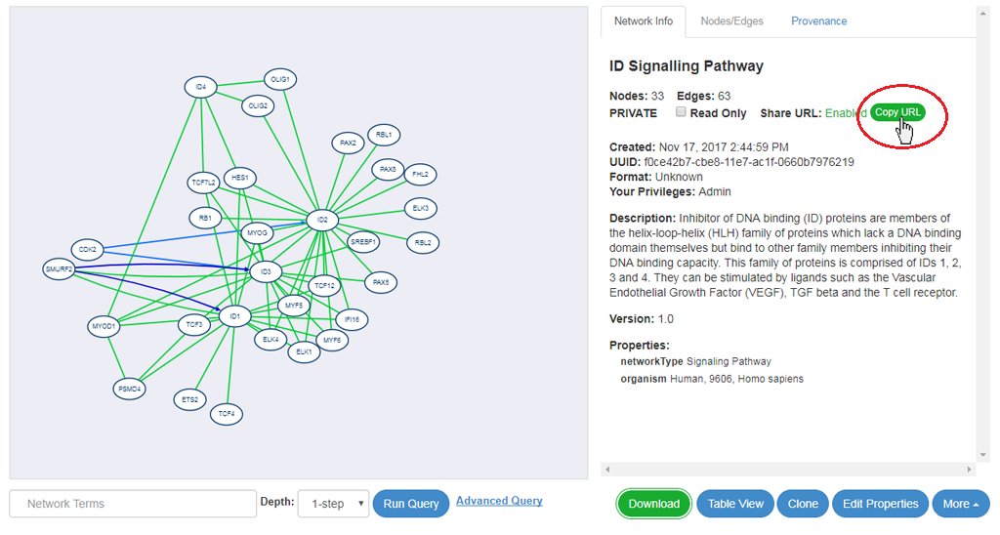
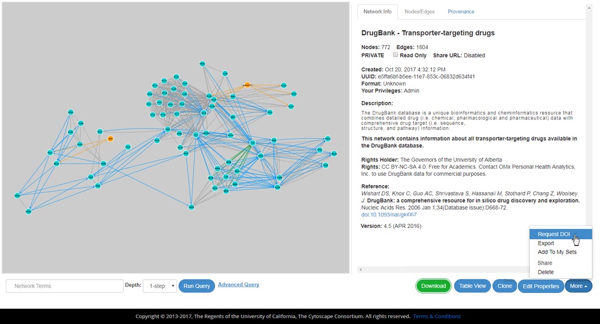
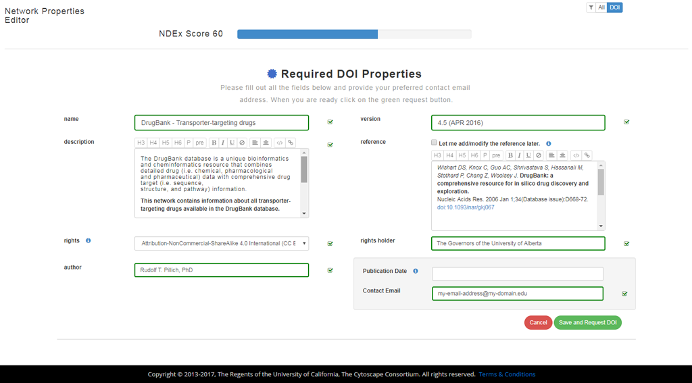
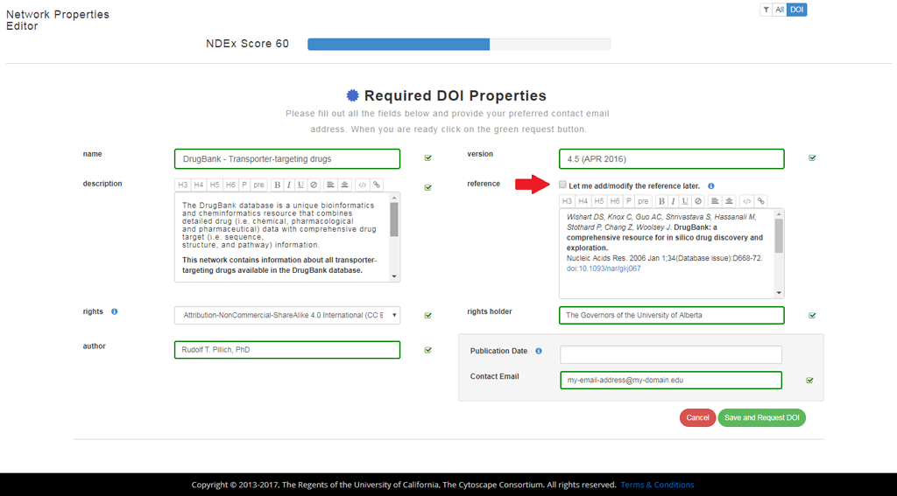
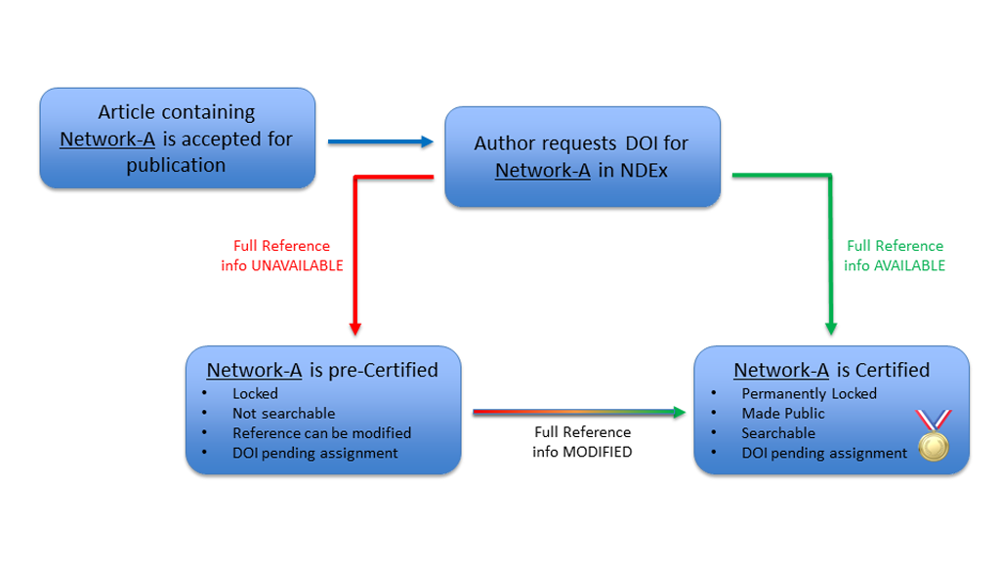
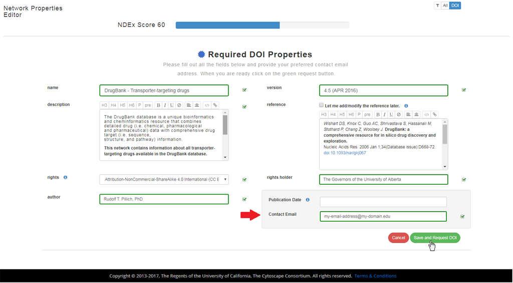

Last updated: January 3rd, 2018
The public NDEx site includes a number of features to promote and support publishing of data in network format. Although published networks will typically be associated with research articles, there are cases where authors will decide to publish network data independently from a canonical scientific journal article. For example, researchers generating networks from large datasets using automated analytic pipelines may wish to make their results available on an ongoing basis.
IMPORTANT NOTE: The screenshots in all our user manuals are for training purposes and might be different from the actual screen output you will obtain when working on the current NDEx version deployed to our public server.
Besides its use in pre-publication and collaborative research efforts, NDEx can also be a useful asset for the publication of networks referenced in peer-reviewed journal articles.
Advantages for authors include easy network storage/retrieval, full Cytoscape integration and DOI minting, while publishers can rely on a simplified submission management (no supplemental data, tables or figures necessary), improved anonymous web-based review process (using interactive networks rather than tabular data) and better/faster access to published data by hyperlinking figures in articles directly to networks in NDEx via URLs or DOIs.
The following sections summarize how to use NDEx and its built-in features throughout the entire publication process.
To do this, authors first need to create an NDEx Account; then, they can use one of the following methods to load their private networks:
When authors are ready to submit their research paper, they can include URLs in their submission to allow anonymous access to their private networks. These URLs, called "Sharable URLs" are similar to Dropbox or Google Docs links and grant access to the networks ONLY to people that know the URLs (in this case the Journal's editor).




Once the peer-review process is complete and the manuscript officially accepted, authors can use another powerful NDEx feature and "Request a DOI" for their networks to include in the final published article. Please review the next sections for details and important information about requesting and using DOIs and adding a reference.
For reproducibility and long term data access, NDEx offers the possibility to request DOIs for any networks. Requesting a DOI for a network ensures that the network will become a stable, immutable resource and guarantees long term access to the underlying data. In addition, the DOI can be used in subsequent publications or to submit data to online repositories.
Once the DOI request is submitted, your network will be locked and no furtherchanges will be possible (with the exception of adding/modifying publication reference information as explained below), so it is very important that you check carefully all the information entered in the DOI-required fields before submitting your request!


Adding a publication reference to a network is not required to request a DOI; this operation can be performed by the author at a later time (usually after the article referencing the network has been officially accepted for publication) according to your publisher's policies.



One of the minimum annotation requirements to submit a DOI request, refers to the "Rights" metadata information. The NDEx user interface provides a number of standard licensing options you can choose from or lets you specify your own custom license in the form of a valid URL. The available options are listed below: